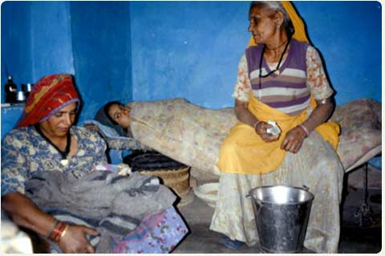
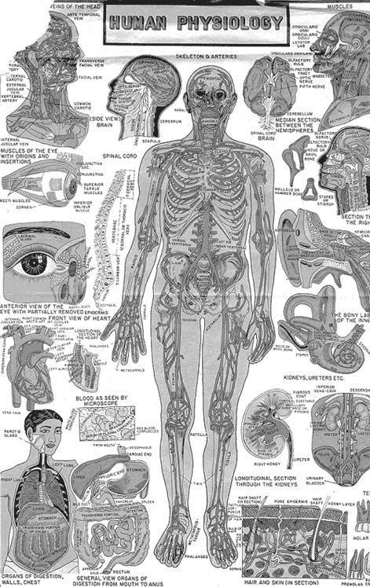
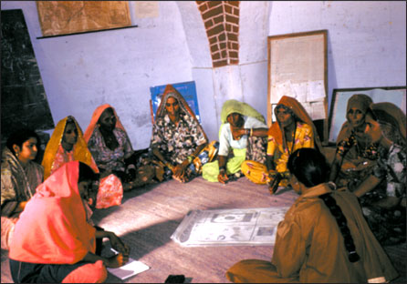
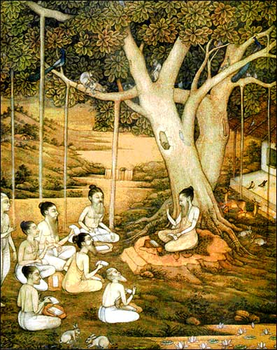
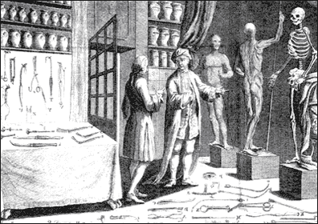
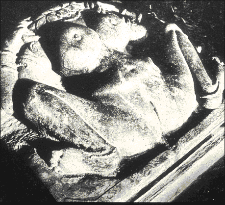

Why MATRIKA?
MATRIKA is short for Motherhood and Traditional Resources, Information, Knowledge and Action. It was a 3-year research project on traditional Indian midwifery in collaboration with four NGOs in North India. We came together to generate and analyze data gathered from workshops, role-plays, interviews, folklore and songs.
Traditional methods are not being used today because of the widespread belief that obstetrical (pharmaceutical, technological, surgical) methods are the best way to make birth safe. The Government of India has a
policy of institutionalized birth for all—although institutions providing quality care are not available for the majority of Indian women.
Global health establishments (World Health Organization, Unicef, and bilateral funding agencies) have accepted the emphasis on “skilled attendance” at birth—meaning bio-medically skilled (able to read and write and use pharmaceuticals) not indigenously skilled.
MATRIKA departed from the conventional Dai Training model. We asked the dais to train us in their own ways of handling pregnancy, birth postpartum. The MATRIKA perspective views women, specifically dais, as decision-makers within a different cultural and socio-economic milieu. Birth traditions, however, are not static and now unfortunately injections are replacing rituals.

Rajasthani dai, mother-in-law, new mother, courtesy Sameera Jain, Sublunar films and Matrika
WHAT ARE MATRIKA’S PARADIGM SHIFTS?
Biomedical to Cultural Paradigm
Our research method stepped out of the allopathic and public health model of the female body and into the realm of indigenous cultural understandings.
Click over the image for the detailed view

The allopathic anatomy of the human body, made up of separate organs and systems, focusing on the material elements.
The yogic, tantric and ayurvedic mapping of the body with a focus on energy channels and systems
Training to Interactive ‘Conversation’ with Dais
We interacted with dais, asking them to share with us their own ethno-medical knowledge. Skills sharing and capacity building efforts of conventional dai training are often limited because the trainers have little understanding of the cultural context-dais� mappings of the body and rituals, beliefs and attitudes.

Active Listening in Action. Rajasthani women are discussing charts which MATRIKA created. These images were made based on the previous workshop�the MATRIKA team was feeding back what we understood they were saying, depicting their own ritual drawings and body concepts. They had the opportunity to correct or add to our impressions.
Allopathic to Indigenous Medical Therapeutics
MATRIKA has assembled a data base of therapies used by dais and other traditionally oriented women.

Rishis learning ayurveda from their guru. Indigenous healing involved situating a person in his/her natural and cosmic environment and utilizing ritual, herbs, ways of living to promote health through balance in the body.

Important discoveries of allopathic medicine involved dissection of cadavers and imaging of inner organs and systems.
Hierarchical to Collaborative Knowledge Paradigm
Women’s reproductive health initiatives have often critiqued top-down, hierarchical medical-delivery systems. In India culturally appropriate, affordable and gender-sensitive perspectives can only be implemented when health care providers and trainers have an appreciation of existing local health knowledge and practice. Assumptions that dais and women are ignorant about their bodies, and superstitious in the rituals which surround pregnancy and birth, work as barriers to effective and sustainable learning.

Image of Lajja Gauri or Aditi Uttanpad. Factoring local and civilizational cultures into health care provision is essential not only to preserve indigenous cultures, but also to maintain a the holistic (and holy) strengths of an abiding source of female power.
Commercialization of woman’s body occurs when we neglect the sacred aspects of our being, sex and birth